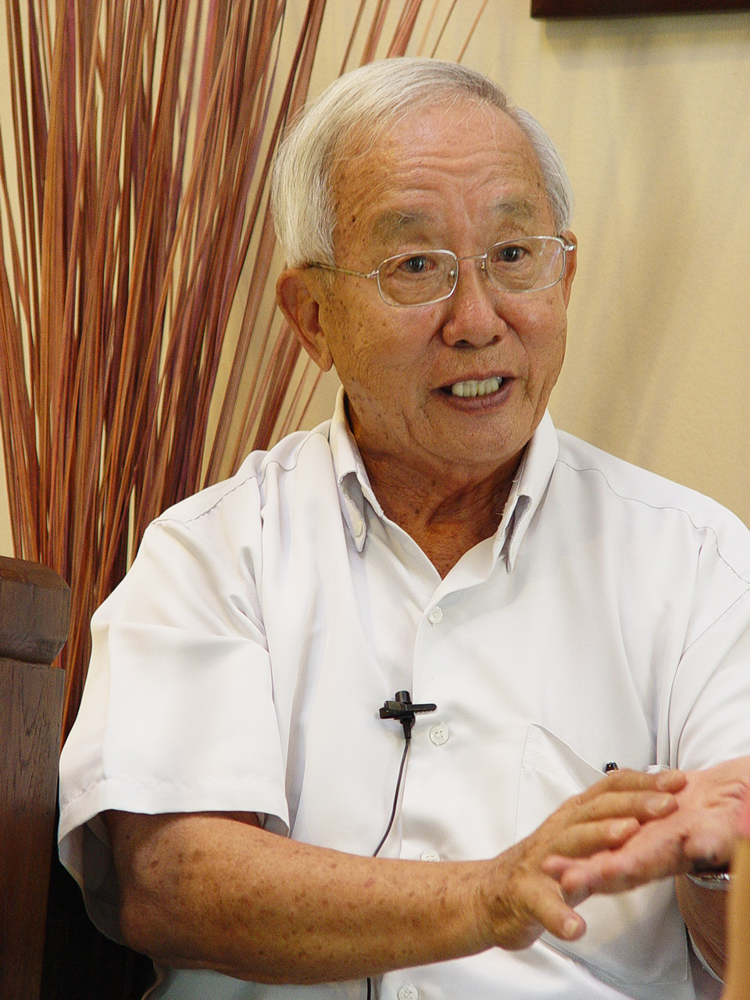
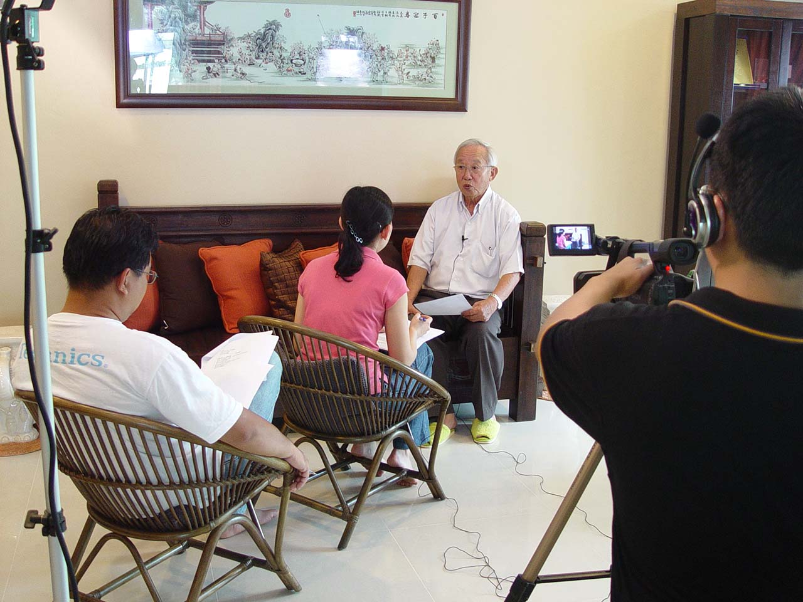

敢怒·敢言·敢为 不平则鸣 华教元老陈玉康（上篇）
2003年，董总资料与档案局为了完善传统历史文献与追溯华教发展史中未及发掘的一面，以及从侧面印证华教发展的变迁，成立了口述历史团队，拟订五年专案计划，培训专员以访谈方式收集华教人物的口述记忆。这项计划以华教人物生平事迹和重要华教事件为主轴，针对性采访相关人物。计划开始时以年迈的华教老前辈为口述采访对象，邀请对方叙述其一生的经历，重点着重在参与华教的活动与事件上。后期则根据华教事件和课题，采访涉及的华教人士。两种收集口述历史方式的侧重点不同，但殊途同归，都是通过人物口述记忆，以收补充史实之效。
董总资料与档案局口述历史团队分别于2007年2月8日至8月3日四次采访陈玉康局绅。以当时的专访资料及誊写访谈文本为基础，本文将分两个篇章来概括陈玉康局绅的生平事迹与参与华教事业的历程。
在新冠病毒肆虐的2020年，曾任董总财政（1997年至1999年）的陈玉康局绅，于2020年9月10日在关丹阿罗亚加住家离世，享年90岁，令华社深感惋惜。
个人作风
走在彭亨州的路上，无论是在咖啡店也好，商店街也好，五角基也罢，只要有人挑起华教课题，陈玉康局绅绝对奉陪到底，而且不是一两个小时就能够解决的，他的声量相当惊人，全情投入还带动作，因此陈局绅赢得了“五角基论教”的美誉，敢说敢做的作风表露无疑。
他性格耿直，敢怒敢言的他不怕得罪人，只要遇到社会上不公正与不公平的事，他都会直言、讲真话。他觉得是对的就坚持，帮理不帮亲，不对的就反对，也不是为了反对而反对，而是真正有必要纠正的地方才会提出来。这就是他的人生哲学。
除了热心于华文教育，陈局绅更是关注社会势态发展，无论什么场合，任何情况，只要看到不合理的现象，他都会第一时间加以批评。除了雄辩，陈局绅亦是个实事求是之人。
“我敢怒敢言绝不是为了反对而反对，而是真正有必要纠正的地方我才会提出来，用意是以长辈的身份给年轻人一些意见。人家说在玻璃屋里丢石头是很危险的，我懂得这一点。所谓“身为人师，行为示范”，领导人的一举一动都会受到别人模仿，凡事不能只是说说而已。比方说筹款，如果我自己不出钱，也绝对不敢要别人出的，所以我要带头，以实际行动让他们学习。我常说我住的是砖屋，不是玻璃屋，所以我丢石头过去玻璃屋，他们丢回来的时候，我的屋子不会破，所以我敢。”
“假如政府能够公平的话，我为什么要喊呢？我都不需要喊嘛，对不对？就是不平则鸣嘛！”
（一）家庭背景与早年生涯
1930年出生于霹雳州爱大华的陈玉康局绅，祖籍福州，自小生活困苦，五个兄弟姐妹中排行第二。早年丧父，家境贫困，一家几口全靠母亲以割胶为生，把孩子培育成长。
“我的家庭那个时候是非常贫穷的，我母亲当时是割胶的，我大概七岁就要协助我母亲去收胶汁。我的父亲我都跟你讲，我很早的时候他就去世了，那么我也了解不多，那个时候我应该是五岁，他就去世了。”
从小是小当家
为了减轻母亲的负担，大概从七岁开始，陈局绅就协助母亲收胶汁以帮补家庭收入，所以小学六年的读书生涯只念了三年而已，中学的求学生涯，他不忍心母亲过于劳累，担起家里的小当家，以半工读方式完成中学课程。
“可以说我在小学停了一个时期又再念，念了又再停，停了又念，差不多小学六年级我只是念三年级，三年念完六年……因为有时候要工作，有时候不能够念，那个时候超龄没有问题的，所以我的小学是三年念完的。然后到中学呢我念完中学，过后我就转进英校，英校念完高中……”
“我的母亲可以说是一个慈母，她自己苦不要紧，她是怎样都是要孩子去读书，我那个时候也想到我的妈妈割胶，我在读书的时候是一个教会学校读书，在休息的时候，我要去帮忙这个食堂卖那个keropok，一个月三十块，然后吃一餐，我记得很清楚住在宿舍的百八块，那么我母亲寄的钱我都不敢多用，有时候还收了拿回去的，那么我毕业以后，我都想到家里面的那种的苦，我自己省，那个时候的薪水不多，我要顾我弟弟念书，寄钱回去给我母亲，所以家里面很多事情都是我在照顾的。”
求学时期
只念了三年小学的陈局绅，毕业以后就到实兆远的南华中学念初中，随后在教会的介绍下转到怡保的英华学校完成另三年的高中课程，并考获英国剑桥文凭。高中毕业后以优异的表现被推荐进入师范学院就读，并开启教师的生涯。
“我念到这个小学以后就是在这个南华中学念到初中，然后经过教会介绍来到这个怡保的英华学校，那个时候一段时间，从华校到英校，我的基础不好，那么是相当吃力的，那个时候就是Form 3，Form 4，Form 5——三年，念了三年，毕业后就到师范念书。”
年少时的陈局绅，待人处事深受母亲的影响，处理人情世故进退有度，喜欢帮人。他在学校也是一个活跃分子，参与什么活动都是领导带头做。
“有啊，她好客。我记得那时候每逢过年过节，她都骑着脚车，买了东西就往这里送，那里送，人家送来一些东西她分了又送给别人。别人家假如有红白事，她一定不会缺席的。”
“在学校很活跃，我就很喜欢领导，很喜欢带头，都是这样，所以那个时候我在教会学校，很多的这个教堂，我们青年组，我都是带头去那个教堂等等。”
教师生涯
师范学院毕业后，陈局绅在登加楼州雅姆新村华小任两年的校长，办学才干获赏识，执教过程中参加师训考试，是一名合格教员。他在雅姆新村华小执教两年后转到吉兰丹哥打峇鲁中华小学执教长达10年，累积了不少教学经验。
“这个可以说是因缘哪，当时没有事情做，那么人家介绍就去做老师，根本没有说要怎样为华文教育而什么，那个时候根本这个谈不到啦，那个时候我才21岁。”
育人12载的陈局绅，坚信当老师要遵守八个字——“身为人师，行为示范”。对于教师的这一份有良心与有意义的职业工作，身为老师一定要对工作积极热心，也要懂得孩子。他也认为老师是教育界的工作者，不只教学生读书，也教学生做人，成人成才。
“这个是良心的工作，假如能够投入的话，看起来是很有意义的。我以前常常接触很坏的孩子，其中一个现在是板厂的经理，他的父亲很早去世，他母亲做生意，他祖母是绑脚的。他这个孩子很高大，自尊心很强，不能当众责罚他，全校只有我有办法管他。他的祖母每次过年过节都拿一个礼篮来我家，问我：陈老师，我的孙子谁都不听，谁都不怕，只怕你，为什么？所以我们要懂得孩子，很多时候这个学生，你要打也要摸，打他一下要摸他三下，他才服你。学生做错事了，你不要处罚他，你要跟他讲，讲了以后他有悔意，就要赞。一直赞，这样学生才会把老师的话听进去。当老师的要遵守八个字，“身为人师，行为示范”，不要像过去的老师说的You listen what I said, don’t follow what I do，我跟你讲的，你听，不要跟着我去抽烟或是搓麻将。假如老师认为工作是朝九晚五，时间过了就过了，那你一生会很苦的。所以身为一个老师，一定要对工作投入，要有挑战性，虽然薪水少一点，但是很有意义。”
“我以前当老师的时候，一个班级里有四十个学生，我都要了解他们的家庭状况。有些家长会为自己的孩子辩护，那么你就知道这个孩子不要动他，让家长自己去管教。如果家长授权的话，那就有办法了。所以，要看看自己是否有意愿当老师，假如没有就千万不要做，因为你苦，学生也苦，没有成绩，害了人，这样对孩子很不公平的。所以后来我当董事长的时候，就时常跟老师们讲，最重要是提供新鲜的教材，让学生学习创新，而不是死板的。我常跟他们开玩笑说，老师是教育界的工作者，不只教学生读书，也教学生做人，塑造一个有人格的人。我时常跟学生强调，人格比学问重要，智慧比知识重要。我跟保送生交流的时候，都跟他们讲“成人成才”，即使你不能够成才，能够成人也很好。成绩不代表一切，这是我常强调的。”
离开教育界 从事垦殖业发展
执教12年后，1967年在因缘际会下离开教育界，改为从事垦殖业，踏上人生另一个里程碑。
“这也是机缘。我在当老师的时候，有一个邻居是从事垦殖业的，常常听他提起在园丘工作的事情，虽然这是赚钱的行业，但是工作机会不多。刚好我有一个朋友在联邦土地局担任高级职员，他说政府最近要发展农业，就鼓励我去申请，当时联邦土地局还很小，不会很复杂。我就找了几个朋友合资，因为当老师的哪里有资本呢？几个朋友合资了就从事垦殖业。”
 “垦殖业就是把森林砍掉来种棕油和树胶，然后联邦土地局分给这些乡村的人、垦殖民，每一个人拿十英亩（土地）。但是我们要种了，跟他顾了两、三年以后，差不多大概要收割的时候他们接下去。当时这个工作当然这个工作呢对我来说从一个教师啊去做这个工作，很多时候你没有经验啊！但是自己懂得那个时候很自量，只是听他们讲，我们自己讲少，听他们讲多，那么从他们讲里面慢慢就收集这些经验，然后到了三、五年过后呢就敢开口了，起初的时候就一直听，假如你没有料的，你讲出来人家就知道你，没有料啊，所以我就很聪明，认为让他们讲，我自己吸收那个经验。67年开始到75年的时候也有多少成就，那么经济也相当许可，我就开始在这个社会里面开始工作。”
“垦殖业就是把森林砍掉来种棕油和树胶，然后联邦土地局分给这些乡村的人、垦殖民，每一个人拿十英亩（土地）。但是我们要种了，跟他顾了两、三年以后，差不多大概要收割的时候他们接下去。当时这个工作当然这个工作呢对我来说从一个教师啊去做这个工作，很多时候你没有经验啊！但是自己懂得那个时候很自量，只是听他们讲，我们自己讲少，听他们讲多，那么从他们讲里面慢慢就收集这些经验，然后到了三、五年过后呢就敢开口了，起初的时候就一直听，假如你没有料的，你讲出来人家就知道你，没有料啊，所以我就很聪明，认为让他们讲，我自己吸收那个经验。67年开始到75年的时候也有多少成就，那么经济也相当许可，我就开始在这个社会里面开始工作。”
从一位教师转至非自己专业的垦殖业，陈局绅必须付出比别人更多的心血与辛劳。这八年间，他默默耕耘，从同行身上学习，听取他们经验，一步一脚印地从垦殖业的门外汉，走到成功的路上。他还凭着长期所累积的丰富经验和广泛的人脉关系，发展种植与贸易业务，是一位白手起家的实业家。
下期将继续刊出“ 华教人物口述历史— — 【敢怒•敢言•敢为 不平则鸣】华教元老陈玉康（下篇）”，敬请期待。